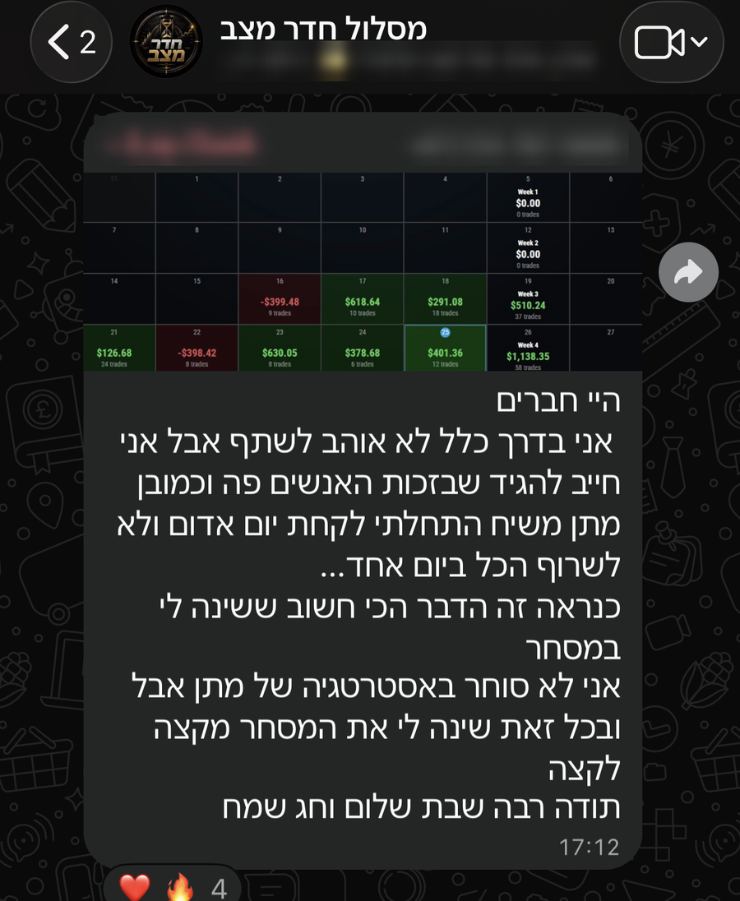

כתבתם "אמונה".
זה אומר משהו. מי שוויתר מזמן לא עוצר על פוסט כזה, ובטח שלא מגיב. אז יש בכם עוד משהו שרוצה.
אבל בואו נהיה כנים לרגע. רוב האנשים לא מוותרים בקול. הם ממשיכים "לעשות", רק בכאילו. כאילו חוסכים, כאילו לומדים, כאילו מנהלים יומן מסחר. מבחוץ זה נראה כמו תנועה. מבפנים הם יודעים שזה לא באמת.
ושום דבר גדול לא קרה בכאילו.
המדריך הזה קצר בכוונה. חמישה כלים, ובכל אחד פעולה אחת לעשות השבוע. לא צריך ידע טכני ולא צריך להיות מקצוענים. צריך רק להחליט שמהיום זה באמת.
בואו נתחיל.
כלי 01תאמינו באמת, בתחום ובעצמכם
הכל מתחיל פה. אי אפשר לעשות משהו עד הסוף כשבפנים אתם לא בטוחים שהוא בכלל אפשרי.
לא מאמינים בתחום? זה בסדר, רק אל תשאירו את זה כתחושה. תחפשו אנשים שבאמת מרוויחים מזה. לא מי שמוכר חלומות, אלא מי שיושב מול המסך כל בוקר ועושה את זה בפועל.
אתם יכולים להתחיל ממני. קחו כעדות את התוצאות שלי:
אני לא מראה את זה כדי להגיד שזה קל. אני מראה את זה כדי להגיד שזה אפשרי.
לא מאמינים בעצמכם? אז בואו נבדוק. נניח שאתם צודקים, ואתם באמת לא יכולים להצליח. מה הסיבה? לא התחושה, הסיבה. חוסר זמן? חוסר ידע? פחד להפסיד? תיקים ששרפתם בעבר?
ברגע שכותבים את הסיבה על דף, קורה משהו מעניין. הרבה מהסיבות מתגלות כבעיות שאפשר לפתור, ולא כגזר דין.
הפעולה לשבוע הזה: קחו דף וכתבו בראשו "למה אני לא אצליח". תכתבו את כל הסיבות, בכנות. ליד כל סיבה תכתבו שורה אחת: מה הצעד הראשון שיכול לפתור אותה.
כלי 02תחסכו, גם אם אתם מרוויחים מעט
חופש כלכלי לא מגיע בהכרח ממשכורת גדולה. הוא מגיע מניהול נכון של הכסף. יש אנשים שמרוויחים הרבה ולא נשאר להם כלום בסוף החודש, ויש כאלה שמרוויחים פחות ובונים לאט משהו אמיתי.
אז השאלה היא לא כמה אתם מרוויחים. השאלה היא אם אתם שמים משהו בצד. אם התשובה היא "כשיישאר", היא בעצם לא.
ומה הקשר למסחר? סוחר שחי מחודש לחודש סוחר מלחץ. כל עסקה מרגישה כמו עניין של חיים ומוות, ולחץ זה בדיוק מה שגורם להגדיל סיכון ולרדוף אחרי השוק. כסף בצד נותן שקט, ושקט נותן החלטות טובות יותר.
הדרך הכי טובה שאני מכיר: הוראת קבע. ברגע שהחיסכון יוצא אוטומטית כל חודש, אתם כבר לא צריכים להחליט עליו כל פעם מחדש.
וחשוב לא פחות, תנו לחיסכון הזה משמעות. לא סתם "חיסכון", אלא "הקרן לחופש שלי", "ההשקעה הגדולה", "הביטחון של המשפחה". כסף עם מטרה הרבה יותר קשה לגעת בו, וקל יותר להישאר מחוברים אליו.
הפעולה לשבוע הזה: תפתחו הוראת קבע חודשית לחיסכון, בסכום שמתאים לכם, גם אם הוא קטן. תנו לה שם של מטרה, ותכתבו לעצמכם משפט אחד על למה היא חשובה לכם.
כלי 03מה שמתחילים, מסיימים
אם הייתי צריך לבחור דבר אחד מכל המדריך הזה, זה הדבר.
רוב האנשים לא נתקעים כי חסר להם ידע. הם נתקעים כי הם לא מיישמים. רואים סרטון, מסכמים שיעור, שומרים פוסט, מתלהבים יום אחד וממשיכים לדבר הבא. ככה מצטבר עוד ועוד ידע, ושום דבר לא משתנה.
ידע שלא מיישמים הוא בסך הכל עוד בידור.
כל דבר שאתם לומדים צריך לעבור שאלה אחת: מה אני עושה עם זה, ומתי. אם אין תשובה, לא למדתם. רק צפיתם.
הפעולה לשבוע הזה: תבחרו דבר אחד שלמדתם לאחרונה ולא יישמתם. אחד בלבד. תכתבו מתי בדיוק אתם מיישמים אותו השבוע, ואל תתחילו ללמוד שום דבר חדש עד שסיימתם אותו.
כלי 04תסחרו כמו מקצוענים
אם אתם כבר סוחרים, תשאלו את עצמכם בכנות: אני עושה את הדברים כמו שצריך, או בכאילו?
סוחר מקצוען עושה כמה דברים פשוטים, בקביעות:
- בקטסט. הוא בודק את האסטרטגיה שלו על נתוני עבר לפני שהוא מסכן עליה כסף. ככה הוא יודע למה לצפות, כולל כמה הפסדים ברצף הם דבר נורמלי.
- יומן מסחר. הוא מתעד כל עסקה, גם את האדומות. במיוחד את האדומות.
- סקירת חוקים. הוא עובר על החוקים שלו באופן קבוע ובודק אם הוא באמת עומד בהם.
- הבנה של כל חוק. הוא יודע למה כל חוק קיים, ומה קורה כשהוא שובר אותו.
הנקודה האחרונה היא הכי חשובה. חוק שלא מבינים למה הוא שם נשבר ברגע הראשון של לחץ. חוק שמבינים, כי ראיתם ביומן מה קרה בפעם האחרונה ששברתם אותו, מחזיק.
לא צריך לעשות את הכל מחר. אבל אם אתם לא עושים אף אחד מהדברים האלה, עכשיו זה הזמן להתחיל.
הפעולה לשבוע הזה: תכתבו את החוקים שלכם על דף. ליד כל חוק תכתבו שתי שורות: למה הוא קיים, ומה קרה בפעם האחרונה ששברתם אותו. אין לכם חוקים כתובים? זו כבר תשובה, ומכאן מתחילים.
כלי 05תפסיקו לעשות את זה לבד
והנה האמת שקשה להודות בה: כמעט אף אחד לא נשאר עקבי לבד.
לא כי אתם חלשים. ככה בני אדם בנויים. כשאף אחד לא רואה, קל לדלג על היומן "רק היום". קל להגדיל סיכון "רק הפעם". קל לספר לעצמכם סיפור. כשמישהו רואה, וכשיש תאריך שבו תצטרכו להראות מה עשיתם, פתאום הכל נראה אחרת.
זה ההבדל בין כאילו לבאמת. פחות כוח רצון, יותר סביבה.
שלושה דברים שעושים את ההבדל:
- סביבה. אנשים סביבכם שהולכים באותה דרך ולוקחים אותה ברצינות.
- מישהו שרואה. מישהו שעובר על היומן שלכם ואומר לכם בכנות מה הוא רואה.
- תאריכים. מועד קבוע שאליו אתם צריכים להגיע עם עבודה מוכנה.
הפעולה לשבוע הזה: תמצאו אדם אחד, חבר, סוחר אחר או בן זוג, ותספרו לו על פעולה אחת מהמדריך הזה שאתם מתחייבים אליה. תקבעו איתו תאריך שבו תראו לו שעשיתם אותה.
ואם אתם רוצים לעשות את זה איתי
בשביל זה בדיוק בניתי את חדר מצב.
מסלול חדר מצב הוא קבוצה קטנה וסגורה, עם 20 מקומות בלבד. אתם מביאים לשולחן את העסקאות האמיתיות שלכם, ואנחנו עובדים עליהן יחד. יש מי שרואה איפה אתם נתקעים, ולא נותן לכם לחזור לאותם דפוסים.
עם מה יוצאים מהמסלול:
- כל הידע איך לנהל את המסחר כמו עסק, ולא לאלתר
- איך לבסס עקביות, גם בימים שלא בא לכם
- איך לבצע בקטסט כמו שצריך, כדי לדעת באמת על מה אתם סוחרים
- איך לנהל יומן מסחר כמו שצריך, ולהפיק ממנו לקחים
- איך לבנות חוקים ברורים, ולעמוד בהם גם תחת לחץ
- איך לקבל יום אדום בלי לשרוף את התיק
המסלול מתאים למי שכבר סוחר ויודע לנתח גרף, אבל עדיין לא הצליח להפוך את זה לעקביות. אם אתם עוד בשלב של היסודות, תתחילו מהכלים שבמדריך הזה, וזה בסדר גמור.
ככה זה נראה אצל עילאי מהמחזור הראשון. הוא התחיל לקחת יום אדום, כלומר לקבל יום של הפסד כחלק מהתוכנית, בלי לשרוף הכל ביום אחד. וזה מה שהוא כתב בקבוצה של המסלול:
"מתן משיח התחלתי לקחת יום אדום ולא לשרוף הכל ביום אחד... כנראה זה הדבר הכי חשוב ששינה לי במסחר"

רוצים לבדוק אם זה מתאים לכם?
משאירים שם וטלפון בטופס הקצר, ונחזור אליכם לשיחת התאמה קצרה. בלי לחץ. נכיר, נשמע איפה אתם עומדים, ונבדוק יחד אם זה המקום הנכון בשבילכם עכשיו. החדר הזה לא מתאים לכולם, ואני מעדיף שנדע את זה לפני ולא אחרי.
ואם זה לא הזמן, גם זה בסדר. קחו את חמשת הכלים ותתחילו מהם. העיקר שמהיום, זה לא בכאילו.
מתן